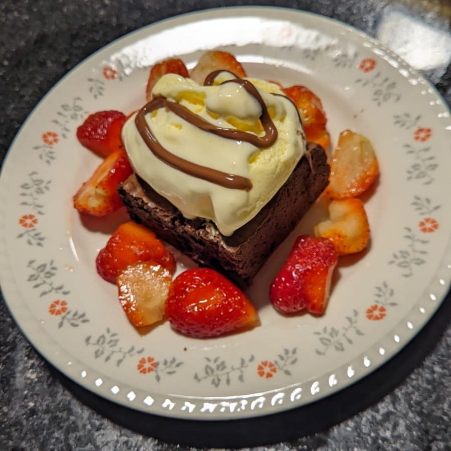

Paolas's Brownie

The delicious brownie from the famous chef Paola Carosella
This recipe is easy to follow and foolprof
You'll never find something so tasty!
Ingredients
- 170 grams of unsalted butter
- 120 grams of 70% dark chocolate
- 200 grams of white sugar, refined and processed (to make it thinner)
- 3 eggs at room temperature
- 1 tea spoon of vanilla extract
- 40 grams of bitter cocoa
- 60 grams of wheat flour
- 1 teaspoon of fine salt
- 170 grams of chocolate chips
- 1 teaspoon of instant coffee
- 1 teaspoon of sea salt
- 100 grams of toasted walnuts
Directions
- Melt butter until it becomes golden ans swith-off the heat
- Add and mix the instant coffee and 120 grams of 70% chocolate, then reserve
- Beat the eggs with sugar for about 8 minutes or until the sugar dissolves
- Mix all the dry ingredients and add both sugar and eggs and chocolate
- Add the other portion of 120 grams of chocolate and the walnuts
- Place in a 22 by 22 centimeters baking tray and cook for 20 minutes at 180ºC
Return to main page